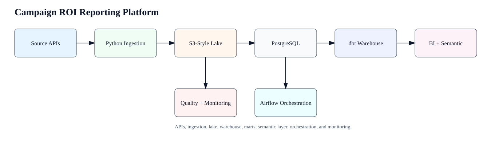
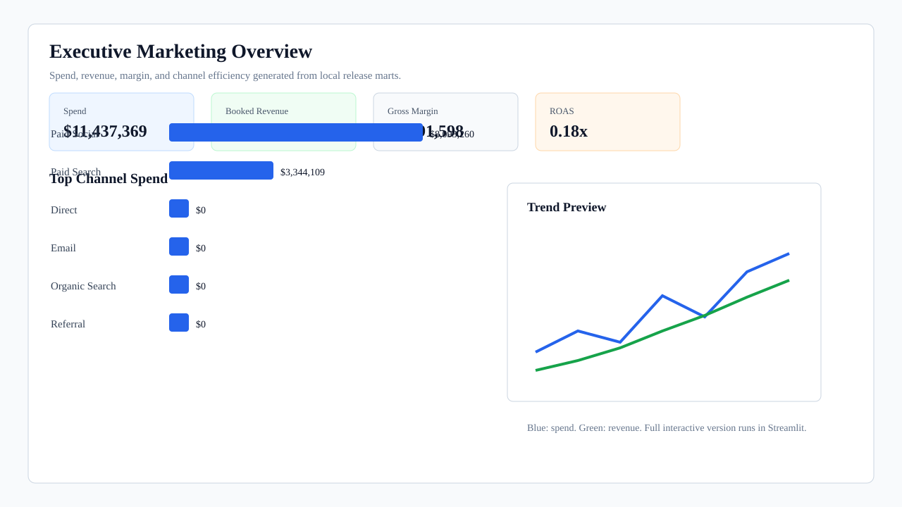
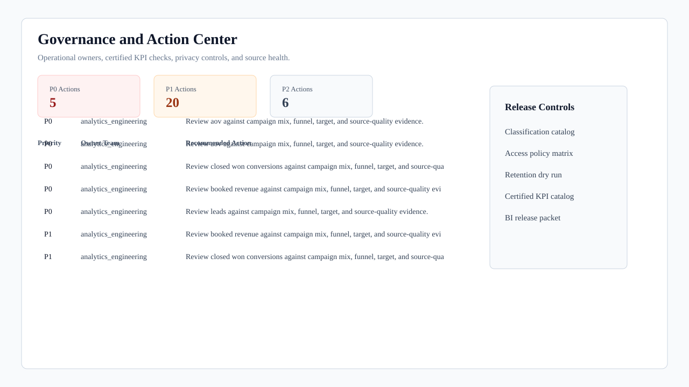
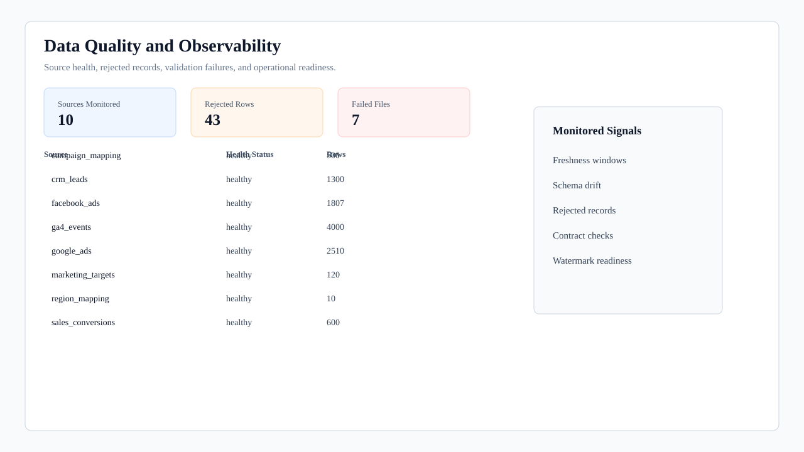

System Scope
This local-first platform ingests paid media, website analytics, CRM, sales, target, and mapping data; validates source quality; loads PostgreSQL; builds dbt warehouse models; and exports BI-ready reporting assets.
This page links the generated outputs from the local pipeline.
{kind=link}
Validation Status
Quality Gatepassed
Checks Passed25/25
Semantic Tables17
Semantic Measures59
Architecture and Dashboards




Streamlit Dashboard Screenshots
Captured from the local dashboard using marts generated by the project pipeline.
{kind=link}
{kind=link}
| Dashboard View | Image |
|---|---|
| Executive Overview Screenshot | screenshots/streamlit/executive_overview.png |
| Channel Performance Screenshot | screenshots/streamlit/channel_performance.png |
| Campaign Intelligence Screenshot | screenshots/streamlit/campaign_intelligence.png |
| Funnel Analysis Screenshot | screenshots/streamlit/funnel_analysis.png |
| Attribution and ROI Screenshot | screenshots/streamlit/attribution_roi.png |
| Target vs Actual Screenshot | screenshots/streamlit/target_vs_actual.png |
| Data Quality Screenshot | screenshots/streamlit/data_quality_monitoring.png |
| Customer Value Screenshot | screenshots/streamlit/customer_value.png |
| Source Health Screenshot | screenshots/streamlit/source_health.png |
{kind=link}
{kind=link}
{kind=link}
{kind=link}
{kind=link}
{kind=link}
Technical Documentation
| Document | Link |
|---|---|
| Execution Profiles | docs/execution_profiles.md |
| Row Count Summary | docs/row_count_summary.md |
| Incremental Loading | docs/incremental_load_evidence.md |
| Data Quality Framework | docs/data_quality_framework.md |
| Warehouse Model | docs/warehouse_model.md |
| Dashboard Outputs | docs/dashboard_outputs.md |
| Business Requirements | docs/business_requirements.md |
| Stakeholder Map | docs/stakeholder_map.md |
| User Stories and Acceptance Criteria | docs/user_stories_acceptance_criteria.md |
| UAT Checklist | docs/uat_checklist.md |
| Dashboard Requirements | docs/dashboard_requirements.md |
| Business Insights and Recommendations | docs/business_insights_and_recommendations.md |
| Business Decision Workflow | docs/business_decision_workflow.md |
| Power BI Setup Guide | docs/POWERBI_SETUP_GUIDE.md |
| Power BI Assets | docs/POWERBI_EVIDENCE.md |
| Excel-ready Analysis | docs/excel_ready_analysis.md |
Operational Status
Generated Results
Governance status: certified.
Generate dbt docs to enable this link.
Signals Covered
- source freshness
- rejected records
- schema and contract checks
- semantic model counts
- generated report availability
- warehouse and BI outputs
Artifact Manifest
| Artifact | Path | Status |
|---|---|---|
| Demo mart manifest | data/exports/demo_mart_manifest.json | available |
| Excel-ready analysis package | reports/generated/excel_ready/README.md | available |
| Business requirements | docs/business_requirements.md | available |
| Dashboard requirements | docs/dashboard_requirements.md | available |
| UAT checklist | docs/uat_checklist.md | available |
| Power BI evidence | semantic_layer/powerbi/POWERBI_EVIDENCE.md | available |
| Executive marketing report | reports/generated/executive_marketing_report.html | available |
| Executive planning report | reports/generated/executive_planning_report.html | available |
| Governance release packet | reports/generated/governance_release_packet.html | available |
| Observability dashboard | monitoring/generated/observability_dashboard.html | available |
| Architecture snapshot | evidence/generated/architecture_snapshot.svg | available |
| Dashboard wireframe | evidence/generated/dashboard_wireframe.svg | available |
| Executive dashboard preview | evidence/generated/dashboard_executive_preview.svg | available |
| Governance dashboard preview | evidence/generated/dashboard_governance_preview.svg | available |
| Observability dashboard preview | evidence/generated/dashboard_observability_preview.svg | available |
| Power BI semantic manifest | semantic_layer/powerbi_tmdl/semantic_model_manifest.json | available |
| Governance manifest | governance/generated/governance_manifest.json | available |
| Local quality gate | local_ci/latest_quality_gate.json | available |
| OpenLineage events | metadata/generated/openlineage_events.jsonl | available |
| DataHub metadata | metadata/generated/datahub_mces.json | available |
| Data catalog | catalog/generated/data_catalog.json | available |
| BI field dictionary | catalog/generated/bi_field_dictionary.csv | available |